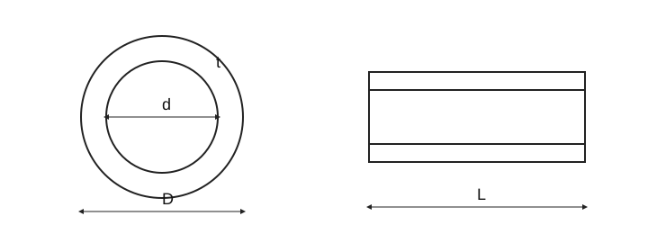

ТРУБЫ И АРМАТУРА

Трубопроводы · DN, PN и фактические размеры
| Пункт | Значение / формула | Значение |
|---|---|---|
| Номинальный размер | DN 25 | DN — обозначение размера, не измеренный внутренний диаметр |
| Наружный диаметр | D | D в мм; не подменять DN |
| Внутренний диаметр | d | d = D − 2t для круглой трубы |
| Толщина стенки | t = (D − d)/2 | Соосная круглая труба |
| Обозначение номинального давления | PN | Допустимое давление зависит от материала, температуры и исполнения |